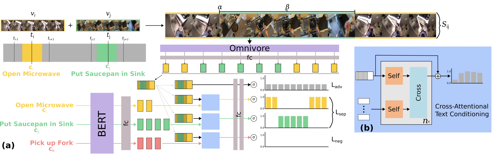
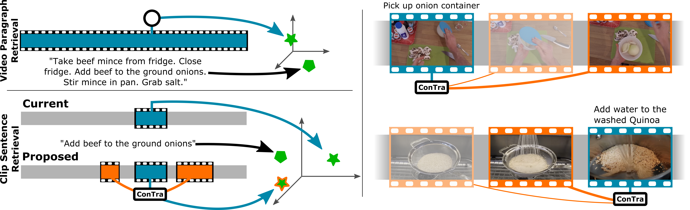

Michael Wray
Assistant Professor of Computer Vision
I am a lecturer/Assistant Professor of Computer Vision at the School of Computer Science at the University of Bristol. My research interests are in multi-modal video understanding, particularly for egocentric videos — focusing on how both vision and language can be tied together towards tasks such as cross-modal retrieval, grounding and captioning. I am part of MaVi and ViLab.
Email: michael (dot) wray (at) bristol (dot) ac (dot) uk
News
- February 2024 - Two Papers Accepted at CVPR2024 GenHowTo and EgoExo4D have been accepted at CVPR.
- January 2024 - CVPR Workshop on the future of Video Co-Organising the "What is Next in Video Understanding workshop?" at CVPR 2024.
- January 2024 - New Papers on ArXiv Two new papers are on arXiv "GenHowTo: Learning to Generate Actions and State Transformations from Instructional Videos" (here) and "Video Editing for Video Retrieval" (here).
- November 2023 - Ego-Exo-4D Released - Our dataset Ego-Exo-4D has been released. Find more information here.
- October 2023 - Area Chair at ECCV 2024 - Honoured to serve as an area chair for ECCV 2024.
- September 2023 - Paper Accepted at BMVC 2023 - Our paper titled "Learning Temporal Sentence Grounding From Narrated EgoVideos" was accepted at BMVC 2023. See more here.
- September 2023 - Call for Presentations for V+L symposium - We are currently looking for presentations at the BMVA 1-day symposium on Vision and Language. Find out more here and apply here.
- September 2023 - Organising a 1-day symposium on Vision and Language - I am one of the organisers for a 1-day event in Vision and Language taking place in January 2024. More information here.
For a full list of News, click here.
Research
Short list of Research projects, click here for a full list.
|
Video Editing for Video Retrieval
Bin Zhu, Kevin Flanagan, Adriano Fragomeni, Michael Wray, Dima Damen arXiv, 2024 [arXiv] |

|
GenHowTo: Learning to Generate Actions and State Transformations from Instructional Videos
Tomáš Souček, Dima Damen, Michael Wray, Ivan Laptev, Josef Sivic arXiv, 2024 [Webpage] [arXiv] [Code] |

|
Ego-Exo4D: Understanding Skilled Human Activity from First- and Third-Person Perspectives
Kristen Grauman, Andrew Westbury, Lorenzo Torresani, Kris Kitani, Jitendra Malik, Triantafyllos Afouras, Kumar Ashutosh, Vijay Baiyya, Siddhant Bansal, Bikram Boote, Eugene Byrne, Zach Chavis, Joya Chen, Feng Cheng, Fu-Jen Chu, Sean Crane, Avijit Dasgupta, Jing Dong, Maria Escobar, Cristhian Forigua, Abrham Gebreselasie, Sanjay Haresh, Jing Huang, Md Mohaiminul Islam, Suyog Jain, Rawal Khirodkar, Devansh Kukreja, Kevin J Liang, Jia-Wei Liu, Sagnik Majumder, Yongsen Mao, Miguel Martin, Effrosyni Mavroudi, Tushar Nagarajan, Francesco Ragusa, Santhosh Kumar Ramakrishnan, Luigi Seminara, Arjun Somayazulu, Yale Song, Shan Su, Zihui Xue, Edward Zhang, Jinxu Zhang, Angela Castillo, Changan Chen, Xinzhu Fu, Ryosuke Furuta, Cristina Gonzalez, Prince Gupta, Jiabo Hu, Yifei Huang, Yiming Huang, Weslie Khoo, Anush Kumar, Robert Kuo, Sach Lakhavani, Miao Liu, Mi Luo, Zhengyi Luo, Brighid Meredith, Austin Miller, Oluwatumininu Oguntola, Xiaqing Pan, Penny Peng, Shraman Pramanick, Merey Ramazanova, Fiona Ryan, Wei Shan, Kiran Somasundaram, Chenan Song, Audrey Southerland, Masatoshi Tateno, Huiyu Wang, Yuchen Wang, Takuma Yagi, Mingfei Yan, Xitong Yang, Zecheng Yu, Shengxin Cindy Zha, Chen Zhao, Ziwei Zhao, Zhifan Zhu, Jeff Zhuo, Pablo Arbelaez, Gedas Bertasius, David Crandall, Dima Damen, Jakob Engel, Giovanni Maria Farinella, Antonino Furnari, Bernard Ghanem, Judy Hoffman, C. V. Jawahar, Richard Newcombe, Hyun Soo Park, James M. Rehg, Yoichi Sato, Manolis Savva, Jianbo Shi, Mike Zheng Shou, Michael Wray arXiv, 2023 [Webpage] [arXiv] |
 |
Learning Temporal Sentence Grounding From Narrated EgoVideos
Kevin Flanagan, Dima Damen, Michael Wray BMVC, 2023 [Webpage] [arXiv] [Code] |
 |
ConTra: (Con)text (Tra)nsformer for Cross-Modal Video Retrieval
Adriano Fragomeni, Michael Wray, Dima Damen, ACCV (Oral), 2022 [Webpage] [arXiv] [Code] |

|
Egocentric Video-Language Pretraining
Kevin Qinghong Lin, Alex Jinpeng Wang, Mattia Soldan, Michael Wray, Rui Yan, Eric Zhongcong Xu, Difei Gao, Rongcheng Tu, Wenzhe Zhao, Weijie Kong, Chengfei Cai, Hongfa Wang, Dima Damen, Bernard Ghanem, Wei Liu, Mike Zheng Shou NeurIPS, 2022 [Webpage] [arXiv] [Code] |
For a full list of Research projects, click here.
Short Bio
Michael is a lecturer in Computer Vision at the School of Computer Science at the University of Bristol. He finished his PhD titled "Verbs and Me: an Investigation into Verbs as Labels for Action Recognition in Video Understanding" in 2019 under the supervision of Professor Dima Damen. After, he stayed in the same lab as a Post-Doc working on Vision and Language and the collection of the Ego4D Dataset. Michael has led the organisation EPIC workshop series from 2021 onwards, is an organiser of the Ego4D workshop series, and is an ELLIS member.Teaching
- Applied Deep Learning 22/23, 23/24. Webpage.
- Computer Systems A 22/23. 23/24. Webpage.
- Individual Projects 22/23. 23/24. Webpage.
People
Current
- Adriano Fragomeni: PhD, 2020–Current (w/ Dima Damen)
- Kevin Flanagan: PhD, 2021–Current (w/ Dima Damen)
- Shijia Feng: PhD, 2022–Current (w/ Walterio Mayol Cuevas)
- Sam Pollard: MEng, PhD, 2023–Current
- Beth Pearson: PhD, 2022–Current (w/ Martha Lewis)
- Richa Banthia: MEng, 2024–Current
- Alex Elwood: MEng, 2024–Current
- Moise Guran: MEng, 2024–Current
- Rahat Mittal: MEng, 2024–Current
- Bence Szarka: MEng, 2024–Current
Previous
- Benjamin Gutierrez Serafin: MSc, 2020
- Pei Huang: MSc, 2016
- Lee Tancock: MEng, 2023
- Zac Woodford: MEng, 2023
Misc.
Workshop Organiser
- WINVU: CVPR2024
- EPIC@: ICCV2021, CVPR2021, ECCV2020
- Joint Ego4D+EPIC@: CVPR2023, CVPR2022
- Ego4D@: ECCV2022
Area Chair
- CVPR: 2024, 2023
- ECCV: 2024
Outstanding Reviewer
- ECCV2022
- ICCV2021
- CVPR2021
- BMVC2020
Reviewing Duties
Conferences
- CVPR: 2022, 2021, 2020, 2019
- NeurIPS: 2023
- ICCV: 2023, 2021
- ECCV: 2022
- ACCV: 2022, 2020
- BMVC: 2023, 2022, 2021, 2020, 2019
- WACV: 2023, 2022, 2021
Journals
- TPAMI
- IJCV
- TCSVT
- Pattern Recognition